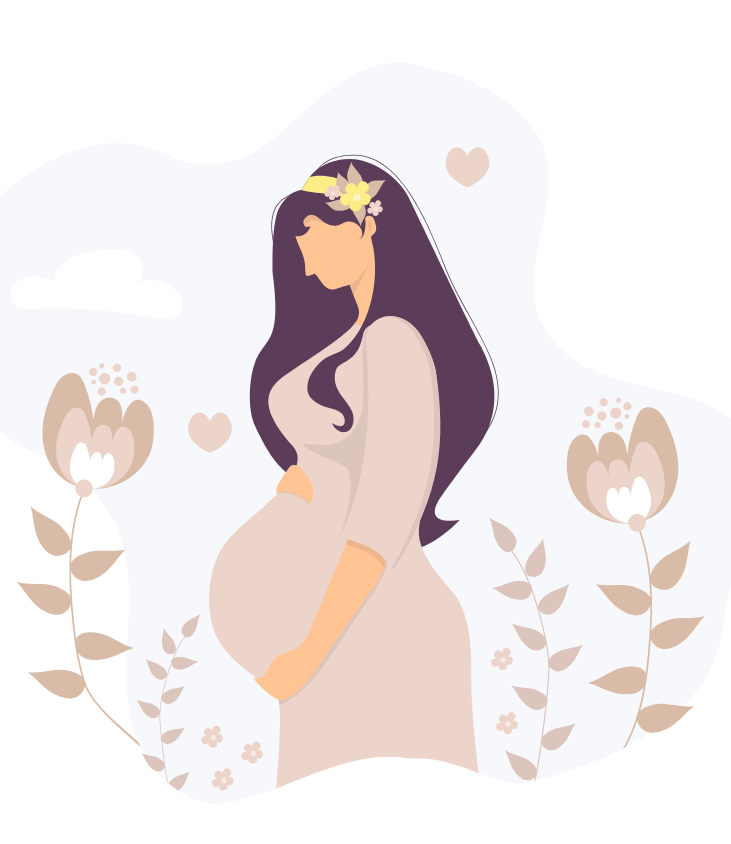

Como conquistar um parto tranquilo e seguro?
3 encontros nos dias 06, 07 e 08 de março
> Autorizo a Gabriela fernandes a enviar comunicações por e-mail ou qualquer outro meio.

> Autorizo a Gabriela fernandes a enviar comunicações por e-mail ou qualquer outro meio.

Serão 3 encontros online GRATUITO e ao vivo comigo, Gabriela Fernandes, nos dias 06, 07 e 08 de março, sempre às 20h00(horário de Brasilia)
***
Vai ter gravação somente nos Grupos da Imersão. Então corre e garanta sua vaga clicando no botão abaixo
#1
Aprenderá escolher a via de parto (cesária ou normal) mais segura e benéfica para a mãe e o bebê
#2
Como se preparar para um parto com menos dor e um processo de parto mais tranquilo e respeitoso.
#3
Entenderá como funciona o corpo em cada fase do trabalho de parto e como poderá evitar intervenções desnecessárias.
#4
A importância da preparação psicológica da gestante e do acompanhante/companheiro(a) para um parto tranquilo.
> Autorizo Gabriela Fernandes a enviar comunicações por e-mail ou qualquer outro meio.